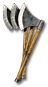

Heyday

Solstice Edge
Throwing Axe
Damage: 4-7
Required Level: 6
Adds 4-12 Damage
+60 Increased Stack Size
Replenishes Quantity
Adds 3-9 Fire Damage
+20-30% Chance Items Roll Magic or Better
+1 Knockback
Adds 4-12 Damage
Unique Throwing Axe
Solstice Edge
- Type
- Throwing Axe
- Base
- Throwing Axe
- Tier
- Normal
- Required level
- 6
- Item level
- 1
- Required dexterity
- 40
- Max sockets
- 1